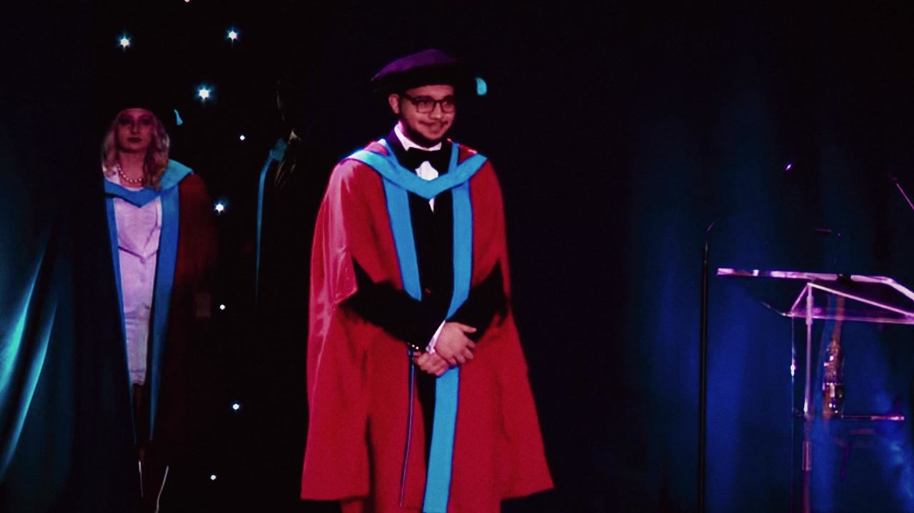
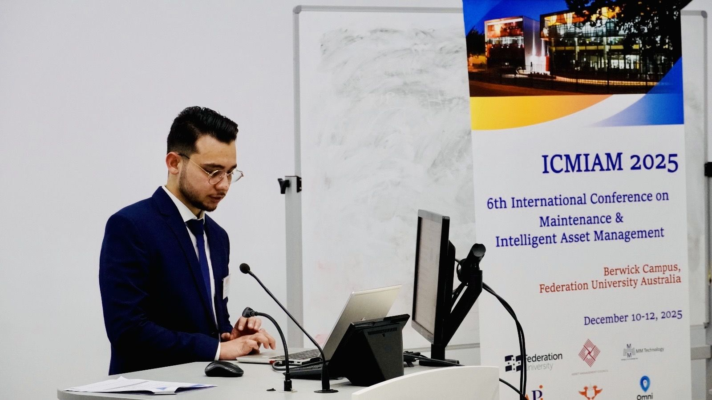

Now at Durham University Digital Twin Lab, Department of Engineering
DrMuhammad UsmanSaeed Akhtar
Postdoctoral Research Associate in Prof. Dawei Wu's research group
I build data-driven and physics-based models of hydrogen and dual-fuel engines, and use them to help shipping and ports plan their move to low-carbon fuels.
Postdoctoral research at Durham University
Modelling the engines and fuels that will decarbonise shipping
In the Digital Twin Lab I turn engine data into models that industry can question, test and use, across one EU, one GIZ and one EPSRC project.
Digital models of a hydrogen–diesel marine engine
Machine-learning models of the MAN D2862 V12 dual-fuel engine, built from the manufacturer's published performance data, and an advisor app that shows diesel use, hydrogen use, efficiency and CO2 at any speed and power, with every result labelled by how far it can be trusted.
SEASTARS
Eight market-ready vessel designs aiming for at least 30% lower greenhouse gas emissions by 2030 and 20% better energy efficiency.
My part in the project GIZKarachi Port decarbonisation
Cleaner tugs, pilot boats and mooring boats for Karachi Port, with the University of Birmingham and UMT Lahore.
About the projectHI-ACT hub
Hydrogen Integration for Accelerated Energy Transitions: a national hub studying how hydrogen and alternative liquid fuels can fit into the UK's whole energy system.
Read more
Graduation film
From Bachelor's to PhD
Two graduations, four years apart, at the same university. A one-minute film of the day I graduated as a Doctor of Philosophy, cut together with the day I finished my BEng.
- July 2022BEng (Hons) Mechanical Engineering, First Class
- August 2026PhD awarded for research on hydrogen–diesel dual-fuel engines
- November 2026Doctoral graduation, University of Huddersfield
Research at a glance
Three threads, one aim: credible low-carbon propulsion
My work sits where combustion science, high-fidelity simulation and data-driven modelling meet, always anchored to measured data.
Hydrogen and clean combustion
Hydrogen–diesel dual-fuel strategies for compression-ignition engines: energy share, injection techniques and geometry, with comparative studies of ammonia and methane.
Explore the themeCFD and engine simulation
3D reacting-flow CFD in ANSYS Fluent and Forte, 1D system models in Ricardo WAVE and detailed chemistry, validated against measurements from a JCB test engine.
Explore the themeMachine learning and digital models
Physics-informed surrogates (SINDy, ANN), NSGA-II optimisation and TOPSIS decisions, now applied to marine engine digital models at Durham.
Explore the themeConferences and travel
On the road with the research
Talks in Huddersfield, Istanbul, Abu Dhabi and Melbourne, and the places in between.



Selected work
Featured research
SINDy-driven engine performance prediction
Sparse identification of nonlinear dynamics with NSGA-II optimisation and TOPSIS decision-making for hydrogen–diesel engines: R² of 0.81–0.99 against CFD, at a tiny fraction of the computational cost.
View publication Review, RSER 2025, IF 18.0Hydrogen as a sustainable combustion fuel
A comprehensive review of hydrogen's performance, challenges and transition pathways for low-carbon propulsion systems, in Renewable and Sustainable Energy Reviews.
View publication EPSRC IAA with an NHS partnerReconfigurable wheelchair (MA-DRW)
Led CAD, FEA and multibody dynamics for a multi-axis driven reconfigurable wheelchair with Barts Life Sciences, from concept to physical prototype.
View projectRecent highlights
2026 so far
-
November 2026
Doctoral graduation
Graduated as a Doctor of Philosophy at the University of Huddersfield.
-
October 2026
Joined Durham University
Postdoctoral Research Associate in the Digital Twin Lab, working on SEASTARS, Karachi Port and HI-ACT.
-
September 2026
Two papers at ICMIAM 2026
Multi-fuel combustion studies of ammonia, hydrogen, gasoline and diesel in SI and CI engines, presented in Huddersfield.
-
August 2026
PhD awarded
Thesis: Assessment of Hydrogen–Diesel Dual-Fuelled Compression-Ignition Engines, after a viva passed with minor corrections in April.
-
May 2026
Two papers at ICES 2026, Istanbul
Hydrogen–diesel and methane–diesel combustion, and ammonia substitution in CI engines, at Yildiz Technical University.
Working on hydrogen engines or greener shipping?
I am always glad to talk about collaborations, data partnerships and joint proposals in engine modelling, digital twins and maritime decarbonisation.